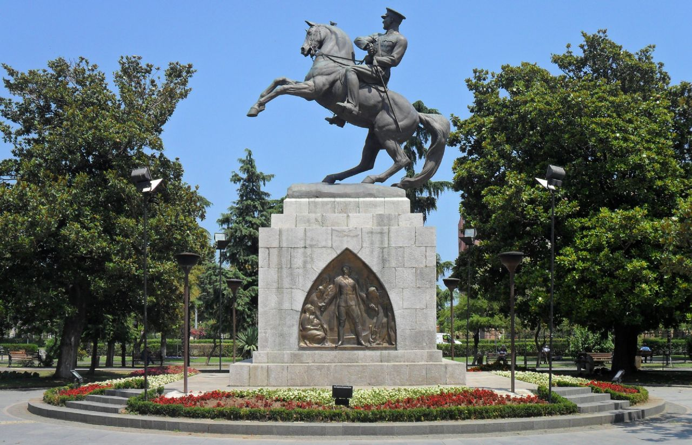

Tarihçe
Samsun, Türkiye'nin büyükşehir statüsündeki otuz ilinden biridir. Karadeniz Bölgesi'ndeki Orta Karadeniz Bölümü'nde, Türkiye coğrafyasının en kuzeyinde merkezî bir noktada yer alır.
On yedi ilçesi ve 1.247 mahallesi bulunan Samsun, 1.371.274 kişilik nüfusuyla bölgenin en yüksek, Türkiye'nin ise on altıncı en yüksek nüfuslu ilidir.
Doğusunda Ordu, güneyinde Tokat ve Amasya, batısında ise Çorum ve Sinop illeri ile çevrili olup kuzeyinde Karadeniz bulunur.
Karadeniz Bölgesi'nin eğitim, sağlık, sanayi, ticaret, ulaşım ve ekonomi açılarından en gelişmiş şehri olan Samsun kalkınmada birinci derecede öncelikli yörelerden biridir.
Yerleşim geçmişi MÖ 60.000 yılına dek uzanan Samsun'da varlığı bilinen en eski halk MÖ 12. yüzyıla kadar burada bulunan Kaşkalardır.
Kaşkaların ardından Hitit dönemini yaşayan şehir, MÖ 1182 ile MÖ 546 yılları arasında birkaç kez el değiştirmiş ve devamında Pers hâkimiyetine girmiştir.
Perslerin ardından Makedonya, Pontus, Roma, Bizans egemenliği gören Samsun, bunların ardından bir Ceneviz kolonisi hâline gelmiştir.
Bu dönemde Dânişmendliler Beyliği tarafından kuşatılan şehir alınamamış ve şehrin hemen yanına "Müslüman Samsun" adıyla bilinen yeni bir şehir kurulmuştur.
I. Mehmed dönemine dek iki Samsun şehri de varlığını sürdürmüş, bu dönemde her iki şehir de Osmanlı Devleti topraklarına katılarak birleştirilmiştir.
1422-1428 yılları arasında Kubadoğulları eline geçen Samsun, 1923 yılında Türkiye Cumhuriyeti'nin ilânına dek Osmanlı hakimiyetinde kalmıştır.
Türkiye'nin kurulmasına dek uzanan 19 Mayıs 1919'da Mustafa Kemal'in Samsun'a çıkışıyla başlayan sürecin başlangıç durağı olması nedeniyle özel bir konumu bulunan Samsun 19 Mayıs Atatürk'ü Anma,
Gençlik ve Spor Bayramı'na ev sahipliği yapmaktadır.
Buna izafeten resmî mahiyete sahip "Güneşin Doğduğu Şehir" sloganıyla tanıtılmakta, Samsun 19 Mayıs Marşı ise Samsun'un resmî marşı mahiyeti taşımaktadır.
Öte yandan "Karadeniz'in Başkenti" ve "Atatürk'ün Şehri" olarak da anılmaktadır.